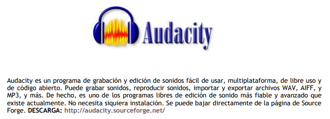

Enlaces externos
Recursos y aplicaciones:
- GitHub - ebu/awesome-broadcasting: A curated list of amazingly ...: A curated list of amazingly awesome open source resources for broadcasters.
Guía PDF "Como hacer una radio"

Guia-LADA_Como-hacer-una-radio.pdf: La Aventura de Aprender es un espacio de encuentro de intercambio en torno a los aprendizajes para descubrir qué prácticas, atmósferas, espacios y agentes hacen funcionar las comunidades; sus porqués y sus cómos o en otras palabras, sus anhelos y protocolos. Radio Guerrilla (@RadioGuerrilla_) es un nodo de trabajo vinculado a radios libres y comunitarias, orientado a la experimentación de formas horizontales de comunicación, la implementación de metodologías colaborativas y la innovación técnica desde radios deslocalizadas, itinerantes, ágiles y sorpresivas… radios de guerrilla.
EBook "Tutorial edición de sonido con Audacity"

ebook_tutorial_edicion_de_sonido_con_audacity.pdf.